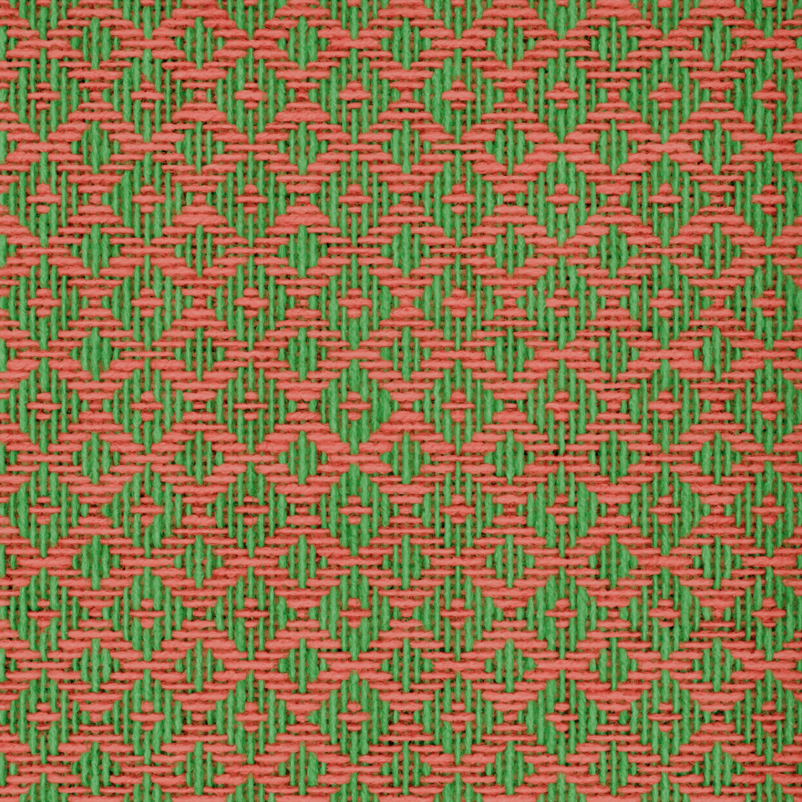
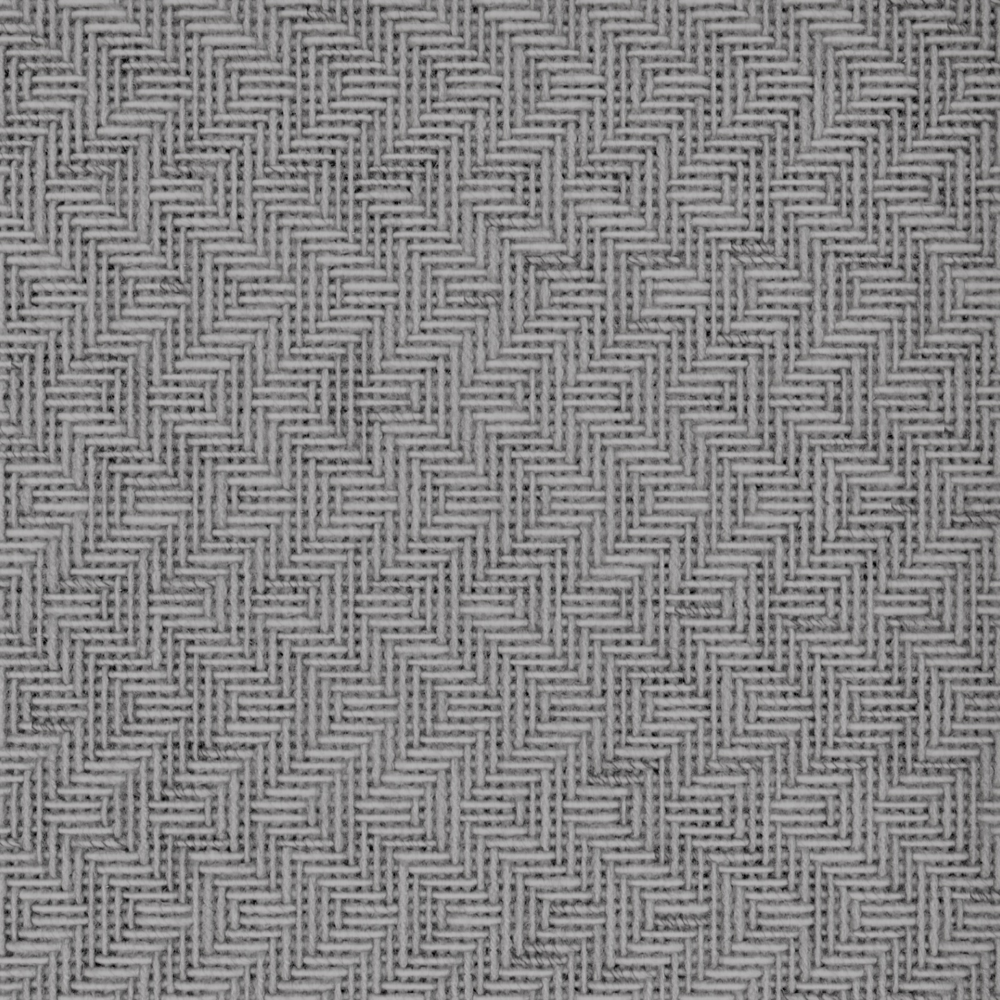
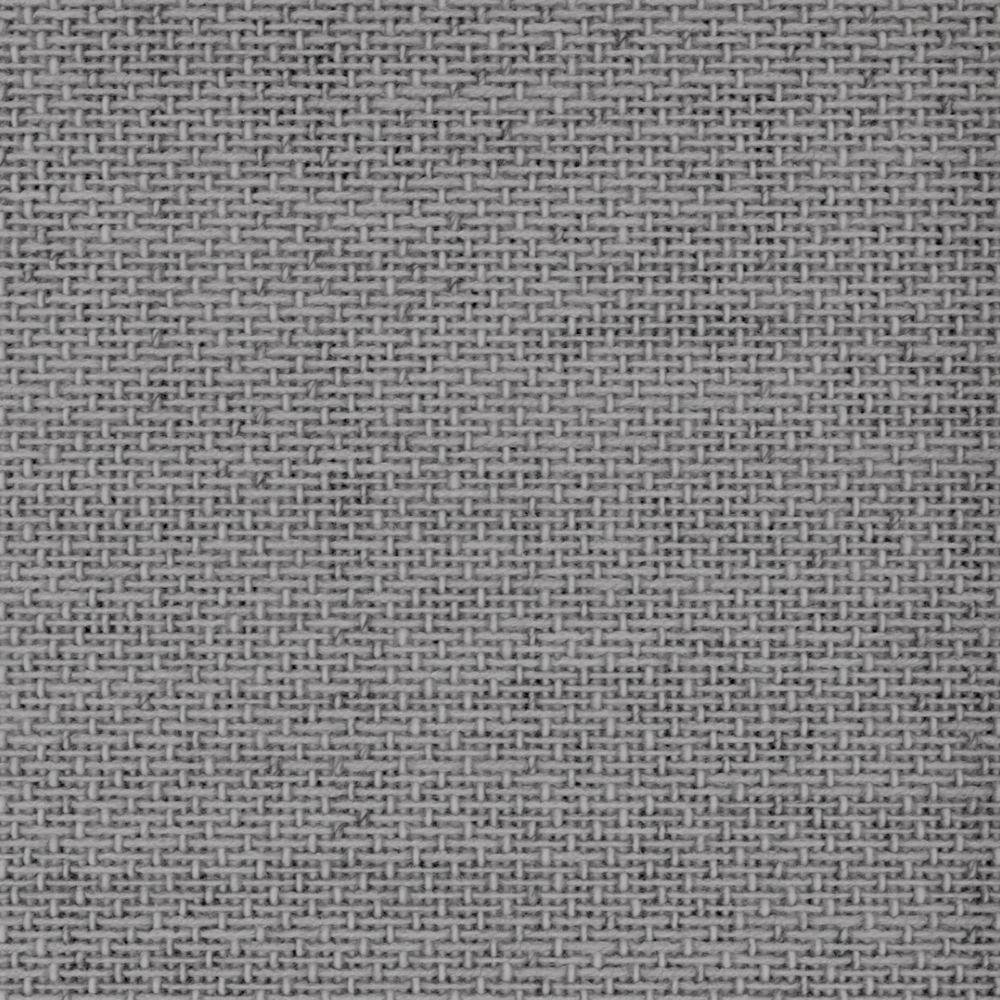

A four-step browser studio that turns a flatbed scan of physical yarn into a Blender-rendered woven fabric swatch, then tiles the swatch onto an interactive 3D try-on surface. This document records every step of the pipeline — what we did, why, the math, the drawbacks, the iterations.
Blender 4.x · Codex_ParametricWeave.blend · MCP socket on port 9876
Shared contract
on-disk folder yarn_library/<yarn_id>/ — not an HTTP API
The product change is that designers no longer juggle yarnseamless + draft-builder + Blender as three apps. The web app owns the workflow; Blender is treated as a render/setup engine behind the scenes. Every yarn that comes out of the scanner ships with a pre-computed Blender block in metadata.json, and the consumer's only job is to push those numbers verbatim to modifier sockets — no math on the consumer side.
What's new since revision 1.0 (2026-05-18 → 2026-05-19)
Visual baseline approved. The user signed off on the current direct web-to-Blender material result and froze it as the 2026-05-19 visual checkpoint. Recorded in docs/CHECKPOINT_2026-05-19.md.
New auto-scale denominator constant. The backend now separates ARC1_V_AROUND_SPAN = 0.6 (geometry provenance — radius-owned core split) from AUTO_TEXTURE_SCALE_U_DENOMINATOR = 1.0 (the new active automatic Texture Scale U denominator). The 0.6 stays as documentation; the auto path uses 1.0.
Pinned footgun set updated.Texture Offset V back to 0 (was 0.031914920); Sub Texture Scale V moved from 0 to 1; Arc 1 V Padding default tightened from 0.012 to 0.008; web-UI Spacing = 0 now maps to Blender Spacing = 0.026 (was 0.03).
New rollback snapshots.Codex_ParametricWeave.pre-scale-u-denominator-test-20260519_004510.blend and Codex_ParametricWeave.pre-spacing-default-20260519_030050.blend.
40 backend tests + frontend unit suite both pass against the checkpoint. Three render jobs (c8b5f23c9cd8, 65286a35639f, 4365f1c9edcc) shown in § 0 below as the approved-state outputs.
0. The 2026-05-19 Visual Checkpoint
After a long iteration on the Arc 2 V-mapping chain, the user visually approved the direct web-to-Blender material result on 2026-05-19 and asked to freeze it as the production baseline. Everything in this section is what "good" looks like today. Future Arc 2, padding, or U-scale work should branch from this state — not from the prior pinned-offset experiments.
0.1 Approved output renders

Figure A — Job c8b5f23c9cd8 (2026-05-19, 03:06). 6-shaft pointed twill (20×20) with two scanned yarns, rendered at 3 200×3 200, Cycles, 96 samples, denoising on. Direct per-yarn materials with the 2026-05-19 frozen defaults (Arc 1 V Padding = 0.008, Spacing = 0.026, Texture Offset V = 0, Sub Texture Scale V = 1, AUTO_TEXTURE_SCALE_U_DENOMINATOR = 1.0). Halo and core both read correctly; section boundaries do not betray themselves on the strand silhouette.

Figure B — Job 65286a35639f (2026-05-19, 02:54). Same draft, earlier sweep during the visual approval session. Cells per cross-section match between Arc 1 and Arc 2; the halo flows outward from the raw core seam at the core V rate (Phase 10t).

Figure C — Job 4365f1c9edcc (2026-05-19, 00:51). Earliest of the three approved-session samples. Shows the same baseline applied to a similar draft; the strand silhouette and the woven structure both look photoreal at swatch scale.
0.2 Frozen socket values (canonical)
Socket identifier
UI name
Checkpoint value
Was (rev 1.0)
Socket_6
Spacing
0.026
0.03
Socket_44
Texture Offset V
0
0.031914920 (Phase 10n checker phase)
Socket_87
Sub Texture Scale V
1
0 (Rule 12 warning context)
Socket_88
Sub Texture Offset V
0
0
Socket_97
Texture Scale U (root)
1
1
Socket_244
Arc 1 V Padding
0.008
0.012
Texture Scale U stays neutral at the root. It is only a temporary visual test knob; per-material U correction belongs on Material N Texture Scale U and is derived from the new denominator below.
0.3 The new auto-scale denominator
The backend now keeps two distinct constants:
ARC1_V_AROUND_SPAN = 0.6 # geometry provenance — Arc 1 / Arc 2 radius-owned core split (0.015 / 0.025)
AUTO_TEXTURE_SCALE_U_DENOMINATOR = 1.0 # active denominator for the automatic Texture Scale U path
arc1_v_min_padded = max(core_v_min − Arc 1 V Padding, fiber_bot_v_min)
arc1_v_max_padded = min(core_v_max + Arc 1 V Padding, fiber_top_v_max)
visible_v_span = arc1_v_max_padded − arc1_v_min_padded
Material N Texture Scale U = visible_v_span / AUTO_TEXTURE_SCALE_U_DENOMINATOR
The previous / 0.6 formula folded the geometric split into the texture multiplier — convenient as a single number, but it conflated "what's the physical V rate of Arc 2's core?" with "what's the right texture U scale?". The 2026-05-19 split treats those as two independent concerns. The 0.6 stays as radius/split provenance in code comments and in this doc; the active auto path uses 1.0.
Smoke value from a recent yarn (visible V span 0.0338):
Unchanged. Without this, Arc 2's halo mapping doesn't fire (Rule 11).
Texture Scale V
1
Unchanged. Anything else multiplies the V output and misaligns the Arc 1/2 partition.
Texture Offset V
0
Changed. Phase 10n's 0.031914920 was a checker/material phase-alignment experiment; the approved checkpoint returns to neutral.
Texture Side Flatten
0
Unchanged. Cross-section maps as flat ribbon (no cylindrical projection).
Sub Texture Scale V
1
Changed. In the approved baseline the sub-strand layer carries the same V scale as the main strand. Earlier docs pinned this to 0 with a warning that 1.0 would "double the Arc 2 V mapping"; on this branch the Arc 2 chain accepts it because Phase 10t's free-halo flow already inherits the core V rate.
Sub Texture Offset V
0
Unchanged.
0.5 Code defaults aligned to the checkpoint
backend/app/blender_sync.py — DEFAULT_ARC1_V_PADDING = 0.008; setup forces Texture Offset V = 0, Sub Texture Scale V = 1, Sub Texture Offset V = 0.
backend/app/blender_sync.py — DEFAULT_SPACING = 0.026; Web UI Spacing = 0 remaps to physical Blender Spacing = 0.026.
backend/app/blender_live.py — PINNED_FOOTGUN_SOCKETS updated to the values above; AUTO_TEXTURE_SCALE_U_DENOMINATOR = 1.0.
Then reset the backend denominator to the previous visible-span formula only for comparison:
Material N Texture Scale U = visible_v_span / 0.6
Doc-vs-code reading rule
Where § 7.4 (the original pinned set) and § 0.4 (the checkpoint pinned set) disagree, § 0.4 wins. The earlier table is kept for traceability — it documents how the project arrived at the checkpoint — but the running code matches § 0.4.
1. Executive Summary
Three previously-disconnected pieces of software now talk through one workflow:
yarnseamless — an image-science pipeline that takes a 1600 DPI flatbed scan of physical yarn (multiple threads, several photos, hairy halos, missing alpha) and produces a seamless RGBA yarn dossier with pre-computed Blender metadata.
Fabric-generator-tryon — the new 4-step React studio that owns the user-facing workflow: yarn authoring, draft authoring, render preview, and a browser-side try-on scene.
Blender — Codex_ParametricWeave.blend with the Parametric Weave knotty geometry-node graph, driven via headless subprocess or a live MCP socket (port 9876).
The studio runs the user from "I have a yarn scan" to "I have a rendered fabric swatch tiled on a 3D shirt" in four wizard steps. No tab juggling, no manual file copies, no Blender knowledge required from designers.
What ships today
Capability
Status
Notes
Multi-thread yarn scan splitter
done
Detects 1–N parallel threads in one scan, levels each into its own strip, runs the band detector.
Multi-fragment stitcher (yarn longer than one scan)
done
User picks join points; LaMa inpaints; alpha is regenerated post-join.
LaMa join inpainting
done
big-lama.pt resolved via env var or chunk-reconstruction at runtime.
Post-inpaint band detector (FWHM density walk)
done
One pass over assembled alpha returns {core, fiber_top, fiber_bot}.
Yarn library (cross-app contract)
done
Shared on-disk folder; the only inter-process API.
Use the swatch as a tiled texture in a three.js scene.
Full-viewport WebGL.
Layout pattern established 2026-05-13
Every step is its own full-page React app. The only persistent chrome is a sticky header (hero + 4-step stepper) and a sticky footer (Back / Next). Steps opt into this pattern with a class on the shell — e.g. step-yarnseamless unlocks scroll for the canvas-heavy Step 1 editor. We tried twice to embed yarnseamless inside a viewport-locked layout and failed; the per-step shell is now mandatory.
Ports — full reference
Process
Port
Purpose
Override
yarnseamless Vite
5173
Original reference UI
vite.config.js
yarnseamless Node
3001
Multipart uploads, light proxy
hard-coded
yarnseamless Flask
3002
LaMa + alpha solver + multithread API
hard-coded
Fabric-generator-tryon Vite
5180
The studio UI
vite.config.ts
Fabric-generator-tryon FastAPI
8000
Library + draft + render endpoints
uvicorn.run(host=, port=)
Blender MCP socket
9876
BlenderMCPAddon socket server
BLENDER_PORT env (Makefile pins 9876)
Headless vs Live MCP render — one switch
BLENDER_LIVE_RENDER
Executor
When to use
unset / 0 (default)
Headless — spawns blender -b <blend> --python <script>. The .blend re-opens cleanly each render.
Production. Default. Makefile target make backend-dev.
1 / true / on
Live MCP — sends the same Python script body to Blender's port 9876 via BlenderMCPAddon.execute_code. Renders against the user's current scene.
Dev only — iterating on the .blend, want renders to land in the viewport you're editing. make backend-dev-live.
Both paths use the same script generation (build_headless_render_script in render_jobs.py) — only the executor differs. The live path locally overrides BLENDER_TIMEOUT_SECONDS → BLENDER_LIVE_TIMEOUT_SECONDS (default 900 s) so long Cycles renders don't TCP-timeout.
Step 1 takes a flatbed scan of physical yarn and produces a clean, seamless, dimension-bearing RGBA dossier. It is the most algorithmically intricate step in the entire studio.
Figure 1 — A raw scan ingested by Step 1. Three parallel threads, 3 572 × 15 689 px, embedded DPI 1600. The pipeline below splits each thread, stitches fragments end-to-end, inpaints the join seams, regenerates alpha, and emits one seamless yarn per thread.
3.1 The five sub-stages
Upload — drag a scan into the studio. The backend stores raw bytes under runtime/debug/<session>/ (git-ignored).
Multi-thread split & level — auto-detects parallel threads in the scan; cuts each into its own strip; levels them so the band centre is horizontal.
Multi-fragment stitch — when one yarn was captured across multiple scans, the user picks join points and the system splices them end-to-end.
LaMa join inpainting — the join seam is masked and inpainted with big-lama.pt; alpha is regenerated on the joined image.
Band detection + dossier save — runs the FWHM density walk on the assembled alpha; pre-computes the Blender-ready V-band values; writes rgba.png, input_thumb.jpg, metadata.json into the shared library folder.
3.2 Multi-thread detection & per-thread band finding
The solid band module in backend/app/yarnseamless/multithread_flow/solid_band.py runs two parallel band detectors per thread, then picks the better one for the alignment step:
Detector
Idea
Threshold
Result
Approach Capproach_c_longest_run
Per-row longest-True run / image-width.
COVERAGE_THRESHOLD = 0.85
Longest contiguous run of qualifying rows — the densest part of the thread.
Approach Dapproach_d_combined_smoothed
Weighted sum 0.2·mean + 0.2·max + 0.3·coverage + 0.3·run_frac, smoothed by a 5-tap moving average.
SCORE_THRESHOLD = 0.85
A wider, more forgiving band. Used as fallback when C returns a negative top_y.
Both feed compute_fiber_extents_y, which walks outward from the core, qualifying a row as "in strand" when its visible-pixel count is ≥ max(3, 0.05 × peak_visible_count). The output per thread is:
On clean, single-thread scans Approach C is more accurate (sharp core boundary). On noisy or multi-thread scans Approach C frequently returns top_y < 0 — its 0.85 coverage threshold is too strict — and the per-thread review needs some band-centre estimate before the user can manually offset. Approach D is the fallback.
3.3 The two-pass band problem (current → target)
Today there are two independent band detectors running on different stages of the pipeline:
Pass
Runs on
What it produces
Used by
Pass 1 (pre-inpaint, per-thread)
Each thread's leveled alpha, before stitching.
C/D core bands + fiber extents per thread.
MTI alignment, review overlays, width field in export metadata.
Pass 2 (post-inpaint, on assembled alpha)
The final export_assembled_alpha.png after multifragment stitching, LaMa inpainting, alpha regen, and no-wraparound export trimming.
bands_px = {core, fiber_top, fiber_bot} and the normalised V-ranges in Blender convention (V=0 bottom).
Final metadata.blender.{core_v_min/max, fiber_top_v_max, fiber_bot_v_min}.
Drawback: the two passes don't fully agree
Pass 2's core is currently inherited verbatim from Pass 1 averages (unified_top = round(avg(c_band.top_y + frag_y))). So the final assembled core is quantised to per-thread C/D guesses, not measured on the assembled alpha. Also, Pass 1 owns "core" and Pass 2's compute_fiber_bands owns "fibers" — different density semantics (binary threshold vs visible-pixel walk with peak%-of-floor).
Planned fix — one FWHM density walk post-inpaint
A unified detect_bands (ported from YarnSeamless/yarnseamless/band_segmenter.py) runs once on the final assembled alpha and returns {core, fiber_top, fiber_bot} in a single pass. Pre-inpaint C/D stay only as alignment helpers for MTI. The save-to-library fiber walk is replaced by the new detector; the width field is recomputed on the new core. See docs/WebUIbands/target_pipeline.md for the cut-over plan.
3.4 Multi-fragment stitch & LaMa join inpainting
When a yarn is too long for one flatbed pass, multiple scans are taken and stitched end-to-end. The user picks join points; the backend prepares a join canvas with a soft mask over the seam; LaMa (big-lama.pt, 392 MB) fills the seam; alpha is regenerated on the joined RGB so the new pixels also have correct opacity.
The wraparound join is recorded but excluded from the exported image so the texture U axis is non-cyclic. The wraparound join is what would make the yarn loop seamlessly head-to-tail — we keep the data but trim the export.
LaMa model resolution order
BIG_LAMA_MODEL_PATH env var
LAMA_MODEL env var
../big-lama.pt next to the repo (typically yarnseamless UI/big-lama.pt)
backend/vendor/yarn_pipeline/big-lama.pt
~/.cache/torch/hub/checkpoints/big-lama.pt
Vendored chunk reconstruction when chunk files are present
3.5 Output: the yarn dossier
A saved yarn is a folder. The whole cross-app contract is this folder.
yarn_library/<yarn_id>/
rgba.png # full-resolution RGBA, seamless along U
input_thumb.jpg # small preview
metadata.json # provenance + measurements + pre-computed Blender block
The metadata.json is the contract; § 7 walks it field by field.
3.6 The three-layer state model behind Step 1
The wizard's four steps share state through three layers, with three sync points where every cross-layer mutation lives.
Layer
Lives in
Source of truth for
Written by
Read by
L1 — Library
yarn_library/<id>/ + index.json
"What yarns has anyone ever scanned?"
Save-to-Library inside Step 1 (and the original yarnseamless)
Critical invariant: a colorBinding.yarnAssetId (L3) is a foreign key into L2; an L2 asset's bandMeta.library_yarn_id back-references L1. There are no enforced constraints — every cross-layer mutation is a place a bug can live. Phase W1 shipped the library-delete cascade so deletes in L1 propagate to L2 and L3.
4. Step 2 — Pattern Builder (the weaving draft)
A draft editor that preserves the conventional "tie-up corner" reading direction and binds each palette color to a real yarn asset.
The draft is read from the tie-up corner. Threading starts at the visible right side near the tie-up; the drawdown uses an explicit getThreadingIndexFromDrawdownColumn(...) in src/domain/draft.ts. This avoids mirrored drafts when users rebuild references from weaving sources.
The result reads as cloth, not as a binary matrix.
4.5 Import & parse strategy
Two parsing layers on purpose:
Service parsing — WIF, image-derived, structured text, and canonical normalisation. Files: wif_parser.py, image_parser.py, text_parser.py, service.py.
Frontend fallback parsing — JSON fallback + loose text fallback in utils/parserApi.ts. Keeps the UI usable even when the parser service is offline.
4.6 Color → yarn binding
Each warp and weft palette color gets a row in ColorBindingGrid. A <select> lists every ready L2 asset (filtered by status === 'ready'). The selected yarn's bandMeta.blender.* is what Step 3 ultimately pushes to Material N sockets in Blender.
5. Step 3 — Render Preview (Blender integration)
The render step takes the draft, the per-color yarn bindings, and the render settings, and produces a Blender-rendered fabric swatch. Behind the scenes this is a 1 100-line render script that builds a draft mesh, sets ~110 modifier sockets, generates per-yarn materials, then runs Cycles.
5.1 Request flow
User clicks Preview in Step 3
│
▼
POST /api/blender/render-project (body: draft + yarnAssets + colorBindings)
│
▼
backend/app/render_jobs.py:submit_project_render_job
│
├──▶ For each YarnAsset → build a "material_asset" entry from asset.bandMeta.blender
├──▶ Build a Blender Python script (build_headless_render_script)
├──▶ Spawn blender -b Codex_ParametricWeave.blend -P <script>
│ OR
│ Push over MCP socket to a running Blender on port 9876
│
▼
Blender:
├──▶ Sets Parametric Weave knotty modifier sockets from material_asset entries
│ (Scanner Pixels Per BU, Material N Arc 1/2 V Min/Max, etc.)
├──▶ Loads albedo.png + alpha.png into generated yarn materials (uv_scaled attribute)
└──▶ Renders → writes PNG → backend serves it back
│
▼
Frontend shows the rendered fabric in Step 3, then Step 4 tiles it as a three.js texture.
5.2 The render-control surface
UI control
Range
Backend remap
Blender socket
Effect
spacing
0..1, default 0
0..1 → 0.026..0.10
Spacing
Strand-to-strand spacing. 0.026 m = tightest weave; 0.10 m = loosest.
Pinned 0. V-axis randomisation would misalign the Arc 1/2 partition.
5.3 Render quality defaults (Phase 4f)
Resolution: 3 200 × 3 200.
Engine: Cycles.
Samples: 96.
Denoising: on.
Override with WEAVE_PREVIEW_RENDER_RESOLUTION / WEAVE_PREVIEW_RENDER_SAMPLES.
5.4 Cycles 16 384 px texture cap
Cycles silently downsamples any texture wider than 16 384 px. Real yarn scans routinely run 42 000–47 000 px wide. Two stages of fallback:
UDIM tiles (preferred) — the source rgba.png is split into cycles_tiled/rgba_<UDIM>.png tiles each ≤ 16 384 px. The shader maps fract(uv_scaled.x) × renderTileCount into UDIM U space; the yarn still behaves like one image but every tile stays inside the cap.
Cycles-safe downscale — if UDIM tiling isn't available, the backend writes cycles_safe/{albedo,alpha}_max16384.png and uses that. Procedural Scale U math always reads meta.image_size_px[0], not the loaded image width — so the DPI math stays correct after downsampling.
5.5 Material assignment
For ≤ 16 yarns the script creates one generated material per yarn (FabricStudioMaterial_XX_<asset>), appends them to the object's material slots, then sets the modifier's Material 1..16 sockets. The old colour-id atlas material is retained as a fallback for projects that exceed 16 unique yarns.
Rule 7 — set the modifier socket, not the Set Material node default
Material 1 in Parametric Weave knotty is link-driven from the Group Input. node.inputs["Material"].default_value = mat does nothing — the link wins. You must set mod["Socket_61"] = mat (Material 1's stable identifier). This bit us in Phase 3f.
5.6 The setup-only "live push" (Phase 3i)
Pattern Builder can call POST /api/blender/push-project-bandmeta which runs the same setup body with render_still=False. It updates WebDraft_Live, object material slots, modifier Material N sockets, Warp/Weft material cycles, and V-band metadata, but skips bpy.ops.render.render(...). Useful while drafting because the artist can see updated bindings in the viewport without paying for a Cycles render. Same-yarn warp/weft bindings collapse to one active Material 1, and stale Material 2..16 sockets are cleared.
6. Step 4 — Try On 3D
The rendered fabric image becomes a tileable texture in a browser-side three.js scene. The UI lets the user tile the swatch on draped or flat geometry to evaluate scale, repeat, and grain direction.
Design rule: the browser owns polling and display. Blender ownership stays server-side. Render work is background work — the frontend polls the job state and only switches to the 3D preview when the PNG is ready.
What's deliberately not in Step 4:
No live geometry editing (it's a preview surface, not a garment editor).
No physics simulation (planned, not shipped).
No texture authoring (that's Step 1).
7. The Data Contract
A real, recently-saved metadata.json from the live yarn library. This is the entire interface between yarnseamless and the studio.
The rgba.png file on disk + the multifragment session it was exported from.
UI provenance, future re-derivation. Not pushed to Blender.
physical_scale
Same producer
Declared DPI cross-checked against embedded DPI of source + export.
Confidence / provenance only. Helps separate scanner truth from metadata-only truth.
blender block
Derived from top-level
The top-level fields.
Fabric-generator-tryon → pushed to Parametric Weave knotty modifier sockets. One field per socket. No math on consumer side.
7.2 The derivations (so anyone can re-prove them)
texture_world_width_m = image_width_px / dpi × 0.0254 # 1 inch = 0.0254 m
scanner_pixels_per_bu = dpi × 39.3701 # 1 BU = 1 m = 39.3701 in
core_v_min = 1 − bottom_y_in_export / image_height
core_v_max = 1 − top_y_in_export / image_height
The 1 − flips image-Y (top of image = high Y in pixels) into Blender's V axis (top of texture = V = 1).
7.3 The producer-key → Blender-socket map
metadata.blender field
Blender socket
What it drives
texture_world_width_m
Texture World Width BU(reserved; not yet on the .blend)
Physical U length of one texture repeat, in BU (1 BU = 1 m). Would replace the legacy two-socket divide.
image_width_px
Material N Image Width Px
Image width in pixels. Combined with Scanner Pixels Per BU reproduces the world width.
scanner_pixels_per_bu
Scanner Pixels Per BU (global)
Per-DPI calibration. dpi × 39.3701. Pushed once per render from the first ordered yarn asset.
core_v_min
Material N Arc 1 V Min
Lower V edge of the dense core. Feeds Arc 1 Map.To Min, Arc 2 Top.To Max, Arc 2 Core.To Min.
core_v_max
Material N Arc 1 V Max
Upper V edge of the dense core. Feeds Arc 1 Map.To Max, Arc 2 Core.To Max, Arc 2 Bot.To Min.
fiber_bot_v_min
Material N Arc 2 V Min
Strand silhouette's bottommost V. Feeds Arc 2 Top.To Min.
fiber_top_v_max
Material N Arc 2 V Max
Strand silhouette's topmost V. Feeds Arc 2 Bot.To Max.
fiber_bot_v_max (= core_v_min)
none — diagnostic only
Pre-Phase-3e legacy mirror of core_v_min.
fiber_top_v_min (= core_v_max)
none — diagnostic only
Pre-Phase-3e legacy mirror of core_v_max.
7.4 Pinned "footgun" defaults
Six sockets are asserted by the producer on every bandMeta push. They are not per-yarn — they are global controls that have one correct value for scan-driven yarns. Drifting any of them silently breaks the rendering in a way that takes a debug cycle to diagnose.
Socket
Pinned value
What happens if it drifts
Sub Strand Enable
True(critical)
False → main-strand geometry only → is_sub_strand=0 everywhere → PW Band - Band V falls back to Arc1 Map only → halo never renders. Phase 3g's central fix was pinning this on.
Texture Scale V
1.0
Drift multiplies the V output, misaligning the entire Arc 1/2 band partition vs the actual yarn V positions in the texture.
Texture Offset V
0
Neutral V phase for the approved 2026-05-19 direct-material checkpoint. The previous 0.031914920 value was a checker/material phase-alignment experiment.
Texture Side Flatten
0.0
Drift mixes a cylindrical-projection contribution into the V output. Off keeps the mapping linear in cross-section.
Sub Texture Scale V
1.0
Approved checkpoint value for the sub-strand V scale control.
Sub Texture Offset V
0.0
Same idea on the offset axis.
7.5 What is NOT in the contract
dpi is not pushed to Blender — provenance only.
physical_scale.confidence is not pushed.
twist_period_px / FFT outputs — no socket consumes this.
normal.png / roughness.png / overlay.png — the Blender material loads albedo + alpha only.
Per-thread variance in threads_solid_band — diagnostic only; the unified core_v_min/max is the only consumed band.
8. Blender Deep-Dive — Arc 1 / Arc 2 system
The single hardest engineering surface in this project. Parametric Weave knotty is a geometry-node graph that takes a draft mesh + a yarn texture and produces a woven fabric. The graph evolved through ten phases of fixes to make the rendered yarn faithfully reproduce both the dense core and the wispy halo of a scanned thread.
8.1 Object & modifier stack
ParametricWeave (mesh, 0 verts of its own — geometry is generated by modifiers)
├── Weave (Nodes modifier → Parametric Weave knotty) ← what this section is about
└── Fit To Space (Nodes modifier → Fit Geometry To Space Plane) ← scales output to fit Space plane
WebDraft_Live is a separate hidden mesh object (one face per drawdown cell, with cell_code / warp_material_id / weft_material_id face attributes). Built by backend/app/blender_sync.py:build_blender_sync_code before each render. The Weave modifier reads it via the Draft Object socket.
8.2 The modifier panel (post-cleanup)
┌── Globals (root level) ────────────────────────────────────┐
│ Scanner Pixels Per BU │
│ Texture Scale U │
│ Geometry (input) │
│ Main Strand Radius │
│ Draft Object / Draft Columns / Draft Rows │
├── ▸ Pattern (Over/Under Count, W/W Threads, │
│ Spacing, Amplitude) │
├── ▸ Surface (Thread Subdivisions, │
│ Arc 2 Boundary Inset, │
│ Match Section Slopes, │
│ Arc 2 Edge Angle Mapping, │
│ Arc 2 Match Arc 1 V Rate) │
├── ▸ Texture (Texture Scale V, Offset V, │
│ Side Flatten) │
├── ▸ General (Seed) │
├── ▸ Imperfections (Wobble Amount/Scale, │
│ Pattern Noise X/Y, │
│ UV Random U/V) │
├── ▸ Loose Strands (4 controls) │
├── ▸ Material Slots (Material 1 … Material 16, │
│ NodeSocketMaterial picks) │
├── ▸ Warp Material Cycle (Offset + Length 1-4 + Mat 1-4) │
├── ▸ Weft Material Cycle (Offset + Length 1-4 + Mat 1-4) │
├── ▸ Sub Strand (Enable, Width, Height, │
│ Sub Texture Scale/Offset V) │
└── ▸ V-Band Mapping ⓘ (96 sockets — Material 1..16 × │
(default-closed) Image Width Px / Texture Scale U / │
Arc 1 V Min/Max / Arc 2 V Min/Max) │
Phase 3f removed 5 dead globals (Image Width Px, Image Arc 1/2 V Min/Max) along with the empty Detail panel. Producer's GLOBAL_SOCKETS in blender_live.py shrank to one entry (Scanner Pixels Per BU) to match.
8.3 The Arc 1 / Arc 2 design
A scanned yarn has two visual layers:
A dense core — the solid thread body, narrow, opaque.
A wispy halo — fibres sticking out above and below the core, semi-transparent.
A single-arc UV mapping cannot capture both: if you map the whole cross-section to the core's V range, you lose the halo; if you map it to the silhouette's V range, the dense rows in the texture only occupy ~10% of the cross-section and the strand looks ghostly. Two arcs solve this: an inner arc (Arc 1, radius 0.015 BU) carries the core; an outer arc (Arc 2, radius 0.025 BU) carries the silhouette. The graph builds both arcs as profile curves and sweeps the strand along them.
Arc 1 — single-section mapping (fallback when sub-strand is OFF)
From [0, 1] → To [Arc 1 V Min, Arc 1 V Max]
Maps the whole strand cross-section to the padded core V range. Result: the strand samples only the dense core texture — no halo. The fallback path.
Arc 1 V Padding (Phase 4c → 4h)
Exposed on the modifier (Surface panel, checkpoint default 0.008). The graph expands Arc 1 V Min downward and Arc 1 V Max upward by that amount, clamping inside Arc 2's silhouette:
Padded Arc 1 V Min = max(Material Arc 1 V Min − Arc 1 V Padding, Material Arc 2 V Min)
Padded Arc 1 V Max = min(Material Arc 1 V Max + Arc 1 V Padding, Material Arc 2 V Max)
Backend metadata stays raw; the modifier owns this tuning value. Web UI default is 0.008.
Arc 2 — three-section mapping (used when sub-strand IS ON)
v_around Map Range Texture-V range
───────── ───────── ───────────────
[0, Split Minus] → PW Band - Arc2 Top → [Arc 2 V Min, Arc 1 V Min] (outer bottom → core bottom)
[Split Minus, Split Plus] → PW Band - Arc2 Core → [Arc 1 V Min, Arc 1 V Max] (core bottom → core top)
[Split Plus, 1] → PW Band - Arc2 Bot → [Arc 1 V Max, Arc 2 V Max] (core top → outer top)
The three outputs go through "Weighted" nodes and PW Band - Arc2 Sum A + PW Band - Arc2 V (both ADD nodes) to combine into one piecewise V value per face.
How Arc 1 and Arc 2 combine — PW Band - Band V
Band V = is_sub_strand × (Arc2 V − Arc1 Map) + Arc1 Map
The MULTIPLY_ADD gates on is_sub_strand. On main strand geometry is_sub_strand = 0, so Band V = Arc1 Map (core only, no halo). On sub-strand geometry is_sub_strand = 1, so Band V = Arc2 V (halo + core + halo).
Rule 4 — a gate hidden inside a MULTIPLY_ADD silently invalidates upstream fixes
Phase 3e's Arc 2 rewire was correct in isolation. But because is_sub_strand only becomes 1 when sub-strand geometry is generated, and that only happens when Sub Strand Enable = True, the rendered output was unchanged until Phase 3g pinned the boolean on. The Arc 2 halo is invisible whenever Sub Strand Enable is off, regardless of how correct everything downstream is.
8.4 Split Minus / Plus — the geometry-owned split (Phase 3q)
The current split is computed from profile radii, not from texture V span:
The Arc 2 cross-section gets a 20%-60%-20% partition: 20% top halo, 60% core, 20% bot halo. This is fixed by geometry, not adjusted to the texture. The Phase 10e Match Section Slopes toggle replaces this with a texture-proportional split derived from Material 1's V values.
8.5 Materials — the routing chain
Object material slots Geometry node "Set Material" nodes
───────────────────── ─────────────────────────────────
Slot 0 ← WebYarn_<id> ←──── Material 1 (NodeSocketMaterial input socket)
│ modifier socket Socket_61
│ LINKED to 'Set Material'.Material (Group Input)
↓
PW Set Material 2..16 inputs
↓ modifier sockets Socket_62..Socket_204
↓ LINKED via PW Input - Material Slots Group Input
↓ to PW Set Material 2..16.Material
↓ Selection = (PW Material Is N) gates by material_id
The 96 V-band sockets are not read directly by the Map Range nodes. Each per-material socket flows through a 16-deep chain of Switch nodes that picks the correct value per face based on the material_id attribute. Concretely for V Min:
Material 1 Arc 1 V Min ──┐
Material 2 Arc 1 V Min ──┤
… ├─→ PW Material Core V Min Select 2..16 (cascading switches)
Material 16 Arc 1 V Min ─┘
└─→ output: "active material's Arc 1 V Min for this face"
The switch nodes still say "Core V Min" — Phase 3d renamed the interface sockets (visible to producer) but left the internal multiplexer node names alone. Cosmetic. They route correctly.
8.6 The Arc 2 V chain — five phases of fixes in one day (2026-05-17)
The five fixes shipped on 2026-05-17 are the highest-density piece of engineering in the project. Each phase solved a different layer of the same V-mapping problem. Reading them together is the best way to understand why the Arc 2 system is shaped the way it is.
Figure 2 — Phase 10t inspection: Arc 2 keeps its real Top/Core/Bot path. The central R1-equivalent core interval (Split Minus/Plus = 0.2/0.8) shares the same V rate as Arc 1, while the two outer halo strips extrapolate from the raw core seam outward at the core V rate.Figure 3 — The current saved graph state, "Phase 10t free-halo Arc 2 V flow", now wrapped by the 2026-05-19 visual checkpoint values. Match Section Slopes = false, Arc 2 Match Arc 1 V Rate = false, Arc 2 Edge Angle Mapping = false.
Phase 10 — per-section U scale
Added 22 nodes (PW U - Sec *, PW U - Section Slope, PW U - Section Ratio, PW U - Per Section Multiplier) between PW UV U Add and Combine XYZ.006.X. Multiplies U by section_v_slope / Arc 2 Core v_slope so texels stay isotropic on Arc 2 Top / Core / Bot and Arc 1 main strand. Two debug attrs pw_section_ratio and pw_section_slope on the evaluated mesh.
Phase 10a — Arc 1 baseline correction
Initial Phase 10 used Arc 1 slope = core_span / 1.0 (parametric), giving ratio 0.6 on Arc 1 vs 1.0 on Arc 2 Core — incorrect, because Phase 3q's split makes Arc 1 and Arc 2 Core share the same physical V rate by construction (2π × 0.015 × 1.0 = 2π × 0.025 × 0.6 = 0.0942 BU). Two-link rewire: PW U - Section Slope.in[2] and PW U - Sub Minus Arc1 Slope.in[1] now read from PW U - Sec Core Slope instead of PW U - Sec Arc1 Slope (latter left orphaned for revert).
Phase 10b — profile resolution bump (superseded by 10c)
Arc.001 and Arc Curve Arc primitives went from Resolution = 7 to Resolution = 11 so the Phase 3q section boundaries at v_around = 0.2 / 0.8 land on profile vertices. Killed the original "thick noisy band where G should be" smearing — but works only while the radius ratio keeps boundaries on 0.1-multiples.
Phase 10c — radius-agnostic robust profile
Replaced the static Arc.001 profile feed with a 31-vertex polyline: MeshLine (Count=31) → Position.X = natural_factor → piecewise Map Range to actual_factor → Sample Curve(Arc.001, factor) → SetPosition → MeshToCurve. Vertices 6 and 24 always sit on actual_factor = Split Minus / Split Plus. Stress-tested with multiple arc1_radius values; section boundaries land exactly on vertices for every ratio.
Phase 10d — Arc 2 Boundary Inset
Surface-panel socket (range 0–0.025, default 0). Tent-weighted radial pull of profile vertices near v_around = 0.2 / 0.8:
At inset = 0.010 BU (= arc2_radius − arc1_radius) the boundary vertex sits exactly on Arc 1's silhouette — the section discontinuity hides behind Arc 1.
Critical companion change: baked pw_profile_natural = Position.X as a custom attribute beforeSet Position, and re-routed Store Named Attribute.003.Value to read from it instead of Spline Parameter Factor.002. Otherwise the inset shifts arc-length and v_around drifts off the vertex grid.
Phase 10e — Match Section Slopes
Surface-panel boolean, default off. When on, replaces Phase 3q's geometric split (arc1/arc2 = 0.6 → 0.2 / 0.8) with a texture-proportional split (top_v / total_v, (top_v + core_v) / total_v) computed from Material 1's V values. All four section slopes become equal → the Phase 10 per-section multiplier becomes a no-op (ratio = 1.0 everywhere) → the V-slope-discontinuity band at boundaries disappears. Caveat: split is global (uses Material 1), so multi-material renders match exactly only on Material 1.
Phase 10f — Arc 2 Edge Angle Mapping
Surface-panel boolean, default off. Replaces linear-in-v_around V mapping in Top and Bot sections with cumulative-sin(θ) (= linear-in-cos(θ)) where θ is the actual angle of curvature on the source arc. The intuition: silhouette polygons (θ ≈ 30° or 150°, sin(θ) ≈ 0.5) project to half the screen footprint of polygons near the top of the arc; allocating V proportionally to sin(θ) restores uniform cell size in screen space. Core mapping stays linear.
θ(v_around) = THETA_START + v_around × (Split Minus × SWEEP / 0.2)
norm_top = (cos(THETA_START) − cos(θ(v_around))) /
(cos(THETA_START) − cos(THETA_START + Split Minus × SWEEP))
tex_v_top = Arc 2 V Min + norm_top × (Arc 1 V Min Padded − Arc 2 V Min)
Use with Match Section Slopes OFF for visible effect — Match ON shrinks Top/Bot to a tiny window where the cosine remap is negligible.
Phase 10g (postscript-adjusted) — Arc 2 Match Arc 1 V Rate
Surface-panel boolean, default off. Replaces Arc 2's entire piecewise V chain with a single linear mapping:
tex_v(v_around) = Arc 1 V Min Padded + v_around × padded_core_span
Arc 2 samples exactly Arc 1's padded core V range (multiplier = 1.0; the original × r_arc2/r_arc1 physical-size match was rejected by the user as "1.7× squish"). Cells per silhouette match between Arc 1 and Arc 2 visually. Side effect: Arc 2 surface never shows halo content (texture outside Arc 1's padded V range isn't sampled).
8.7 Phase 10h–10t — post-Arc-2 chain
Phase
What changed
Status
10h
Auto-derive Material N Texture Scale U from visible padded V span. Superseded in active denominator by Phase 10u.
active
10i
Post-bend U storage. Store Warp U / Store Weft U moved afterPW Warp/Weft Set Position, so u_along measures the visible bent curve. PW Warp/Weft U Stride Post-Bend Ratio multiplies the backend's straight-baseline stride by the live length ratio.
active
10j
Attempted PW VisU - * top-view projected-axis correction for Arc 2 U. Reverted — distorted the texture because the simple projected-axis model didn't match the actual swept shell.
reverted
10k
Arc 2 same-strand U transfer. pw_strand_id stored on warp (curve_index) and weft (curve_index + 10000) curves before join. Arc 2 uses Sample Nearest Surface with matching Group ID / Sample Group ID to borrow only Arc 1's U from the same physical strand. Combine XYZ.006.X is fed by PW StrandXferU - Use Same-Strand Arc1 U On Arc2. Only U transferred; Arc 2 keeps its own V mapping.
active
10l
Tested a projected skew inside the matched range.
superseded
10m
Fixed Arc 1's top-view projection (projected_v_arc1 = (1 − cos(π × v_around)) / 2) and material phase, but kept the matched branch active.
rejected by user — Arc 2's halo was repeating the core texture instead of sampling outside Arc 1.
10n
Texture Offset V checker phase repin to 0.031914920.
historical; superseded by checkpoint offset 0
10p
Bake pw_profile_actual alongside pw_profile_natural; route Store Named Attribute.003.Value to read from pw_profile_actual so the physical profile boundary and the Arc 2 UV section tests use the same split values.
active
10s
Restored the full Top/Core/Bot Arc 2 path; Arc 2 Match Arc 1 V Rate = False. Switch chain still in the graph for comparison.
active
10t
Free-halo Arc 2 V flow: Arc 2's top/bottom outer V values are extrapolated from the raw Arc 1 core seam at the core V rate, instead of being endpoint-fit to Arc 2 V Min/Max.
current graph state
10u
Approved visual checkpoint: Spacing = 0.026, root Texture Scale U = 1, Texture Offset V = 0, Sub Texture Scale V = 1, Sub Texture Offset V = 0, Arc 1 V Padding = 0.008, and auto U denominator 1.0.
current checkpoint
8.8 Two recommended baselines
Low-padding mode (simplest)
Arc 1 V Padding = 0.002
All four Phase 10e/f/g toggles OFF
Pure linear V; slopes naturally align across all sections; Arc 1 and Arc 2 Core have equal physical V rate by Phase 3q construction.
High-padding mode (artistic core padding)
Arc 1 V Padding = 0.008 (current checkpoint; adjust only in a new experiment)
Match Section Slopes = True (slope continuity at section boundaries)
Arc 2 Match Arc 1 V Rate = True (Arc 2 cells visually match Arc 1)
All toggles remain in the graph as opt-in tools. The current saved baseline is the Phase 10t free-halo graph plus the Phase 10u approved checkpoint values documented in docs/CHECKPOINT_2026-05-19.md.
8.9 Cross-axis curve-normal symmetry (Phase 5)
Both warp and weft branches carry a Set Curve Normal node with Mode = 'Z Up' (PW Warp Set Curve Normal, PW Weft Set Curve Normal) inserted between Resample Curve and Store Warp/Weft U. Without these, Blender's minimum-twist default oriented the cross-section profile differently per axis — the same v_around value pointed to different physical positions on warp vs weft strands, so Arc 1 V Padding visibly expanded the halo on weft but not on warp. Z-up alignment forces both axes to orient v_around = 0.5 toward +Z (the camera-facing top), making V-band behaviour symmetric.
8.10 Per-strand U stride (Phase 5) — continuous yarn spooling
Two new globals on Parametric Weave knotty drive continuous yarn spooling across warp/weft strands so successive strands pick up where the previous one ended (physically: one weft thread snakes back and forth; one warp end runs the whole loom length).
The stride exactly equals "repeats per strand", so strand N+1's U-start = strand N's U-end. Inside the graph: uv_offset_u = PW Warp/Weft Variation.UV Offset U + curve_index × U Stride Per Warp End/Weft Pick, added by PW Warp/Weft U Stride x Index (MULTIPLY) and PW Warp/Weft UV Offset U Sum (ADD) nodes inserted before each Store Named Attribute.
8.11 The full U-scale formula (Phase 5 + 10h + 10i + 10u)
ARC1_V_AROUND_SPAN = 0.6 # geometry provenance from Phase 3q split
AUTO_TEXTURE_SCALE_U_DENOMINATOR = 1.0 # active checkpoint denominator
# Per-render/per-material:
arc1_v_min_padded = max(core_v_min − Arc 1 V Padding, fiber_bot_v_min)
arc1_v_max_padded = min(core_v_max + Arc 1 V Padding, fiber_top_v_max)
visible_v_span = arc1_v_max_padded − arc1_v_min_padded
material_texture_scale_u = visible_v_span / AUTO_TEXTURE_SCALE_U_DENOMINATOR
# Per-render globals (read off the modifier at push time):
texture_world_width_BU = Material N Image Width Px / Scanner Pixels Per BU
warp_strand_length_BU = Weft Threads × Spacing
weft_strand_length_BU = Warp Threads × Spacing
# Strides — equal to repeats-per-strand so strand N+1 starts where N ended:
U Stride Per Warp End = warp_strand_length_BU / texture_world_width_BU × material_texture_scale_u
U Stride Per Weft Pick = weft_strand_length_BU / texture_world_width_BU × material_texture_scale_u
# Inside the graph (sampled per vertex, after Phase 10i):
post_bend_length_ratio = Spline Length after PW Warp/Weft Set Position / straight_strand_length
u_along = Spline Parameter Factor after Set Position × post_bend_length_ratio
post_bend_stride = U Stride socket × post_bend_length_ratio
PW U Scale U Final = (source_strand_length / texture_world_width_BU) × Material N Texture Scale U
uv_offset_u = PW Warp/Weft Variation.UV Offset U + curve_index × post_bend_stride
base_u = u_along × PW U Scale U Final + uv_offset_u
# Phase 10k Arc 2 transfer:
pw_strand_id = curve_index for warp, curve_index + 10000 for weft
arc2_u_from_arc1 = Sample Nearest Surface(base_u on Arc 1, grouped by pw_strand_id)
uv_scaled.x = base_u for Arc 1
uv_scaled.x = arc2_u_from_arc1 for Arc 2
# Phase 10t/10u project-from-view V + free-flow Arc 2 halo mapping:
projected_v_arc1 = (1 − cos(π × v_around)) / 2
phase_offset_v = 0
uv_scaled.y = map(projected_v_arc1, 0..1 → Arc 1 padded V) + phase_offset_v for Arc 1
uv_scaled.y = piecewise Arc 2 Top/Core/Bot V + phase_offset_v for Arc 2
Arc 2 top/bot outer V = raw core seam ± core_v_slope × outer_section_width
Arc 2 Match Arc 1 V Rate = False
Worked example (47 052 px / 1 600 dpi yarn, default zoom Warp Threads = 80, Spacing = 0.026):
texture_world_width_BU = 47052 / 62992.16 = 0.7470
visible V span @ padding 0.008 = 0.04985
V stretch factor = 1.0 / 0.04985 = 20.06×
material_texture_scale_u = 0.04985 / 1.0 = 0.04985
PW U Scale U Auto = 2.08 / 0.7470 = 2.785
repeats per strand = 2.785 × 0.04985 = 0.139
u_stride = 0.139 (= repeats per strand → seamless join)
total texture passes (80×) = 80 × 0.139 = 11.1
8.12 The custom 31-vertex polyline profile
GeometryNodeMeshLine (Count = 31, Offset = (1/30, 0, 0))
│ uniform points in natural_factor ∈ [0, 1]
▼
Position → Separate XYZ → X = natural_factor
│
├── piecewise Map Range (natural → actual factor):
│ [0, 0.2] → [0, Split Minus] (Arc 2 Top)
│ [0.2, 0.8] → [Split Minus, Split Plus] (Arc 2 Core)
│ [0.8, 1.0] → [Split Plus, 1.0] (Arc 2 Bot)
│ combined via IsTop / IsCore / IsBot weighted sum
│
▼
PW Profile - Store Natural Factor (Store Named Attribute `pw_profile_natural` = Position.X)
│ — Phase 10d: bake the natural factor BEFORE Set Position runs,
│ so the fixed profile anchors survive any radial deformation
▼
PW Profile - Store Actual Factor (Store Named Attribute `pw_profile_actual` = actual factor)
│ — Phase 10p: bake the actual source-arc factor too, so v_around
│ uses the same split coordinates as the Arc 2 V Map Ranges
▼
GeometryNodeSampleCurve (Mode = FACTOR) on Arc.001 at `actual` → Position
│
▼
GeometryNodeSetPosition → optional Arc 2 Boundary Inset (Phase 10d)
│
▼
GeometryNodeMeshToCurve → polyline curve → Store Named Attribute.003 (writes v_around = pw_profile_actual)
│
▼
Curve to Mesh.001 (sweeps the strand curves through this profile)
9. Phase Log — chronological record
A condensed timeline of every fix that shipped, grouped by phase. The full Symptom / Diagnosis / Fix / Verification entries live in docs/putting-it-together/phase_log.md and docs/BlenderFixes/phase_log.md.
9.1 Integration phases (putting-it-together)
Phase
What shipped
Status
1
Library wiring. Shared yarn_library/, FastAPI library endpoints, Step 1 import. Lesson 1: the rgba.png on disk wins over metadata.image_size_px — file open before writing metadata.
done
2a–2f
Yarnseamless processing UI ported into wizard Step 1. Multi-thread split + multi-fragment stitch + FastAPI route port + frontend component port + save-to-library auto-import. The original yarnseamless server is no longer required at runtime.
done
3
Push bandMeta.blender to live Blender. MCP socket on 9876 + headless Blender for production.
Pin Sub Strand Enable = True + BLENDER_LIVE_RENDER env var. Render jobs route to open Blender over MCP in live mode.
done
3h–3q
Direct per-yarn material rendering; Arc 1 V Padding socket; geometry-owned Split Minus/Plus; Arc 2 direction stitching; full halo Arc 2 path.
done
4a–4i
UDIM tile rendering; Arc 1 V Padding exposed in Web UI; preview quality pinned at 3 200 × 3 200 / Cycles / 96 samples / denoising on; fit-aware U calibration chain (later retired in Phase 5).
done
5
Uniform-aspect U + per-strand U stride spool + curve-normal symmetry. Arc 1 V Padding and U stride collapsed into one scale model. The Phase 4d/4i fit-math chain retired; UV Random U default flipped to 0.
Texture Offset V = 0.031914920 — checker phase alignment experiment.
superseded
10p
Bake pw_profile_actual alongside pw_profile_natural; route Store Named Attribute.003 to read it.
done
10s
Restored full Top/Core/Bot Arc 2 path; Arc 2 Match Arc 1 V Rate = False.
done
10t
Free-halo Arc 2 V flow — outer V values extrapolate from raw core seam at the core V rate.
production
U-denom test (2026-05-19)
Separate AUTO_TEXTURE_SCALE_U_DENOMINATOR = 1.0 from ARC1_V_AROUND_SPAN = 0.6 (which stays as radius/split provenance). Only the automatic Texture Scale U path changes from / 0.6 to / 1.0. Spool stride remains derived from the same final material scale.
done
Spacing default (2026-05-19)
Backend DEFAULT_SPACING = 0.026; Web UI Spacing = 0 maps to physical Blender 0.026. Brings the swatch closer to the visually-approved cell aspect at the default zoom.
done
Padding default (2026-05-19)
Backend + frontend DEFAULT_ARC1_V_PADDING = 0.008 (was 0.012). Visually tighter halo expansion at the default.
done
Pin reset (2026-05-19)
Texture Offset V → 0, Sub Texture Scale V → 1. Phase 10n's checker phase shift retired; Phase 10t's free-flow Arc 2 chain makes the sub-strand scale-1 path viable.
done
Visual checkpoint (2026-05-19)
User-approved baseline frozen. docs/CHECKPOINT_2026-05-19.md records every frozen socket value; .pre-scale-u-denominator-test-20260519_004510.blend + .pre-spacing-default-20260519_030050.blend are the rollback snapshots. 40 backend tests + frontend unit suite pass. Three approved-state renders shown in § 0.1.
production baseline
9.3 Key Rules earned the hard way (from lessons.md)
Rule
Summary
1
Interface socket renames preserve wiring (identifier-keyed). Removals are destructive.
2
When values look wrong, the bug can be in three layers at once: producer, wiring, name semantics. Trace all three.
3
Audit ALL Group Input nodes (there are 13 in Parametric Weave knotty) before removing sockets.
4
A gate hidden in a MULTIPLY_ADD silently invalidates upstream fixes. Phase 3e's halo rewire didn't render until Sub Strand Enable was pinned on.
5
Producer keys ≠ Blender socket names. Keep the mapping in one place: PER_MATERIAL_SOCKETS in blender_live.py.
6
Snapshot the .blend before destructive ops — geometry-node interface edits aren't always undoable.
7
Set the modifier's NodeSocketMaterial input, not the Set Material node's default value, when the input is link-driven.
8
Modifier-input setters must tolerate missing sockets across .blend revisions (maybe_set_modifier_input vs set_modifier_input).
9
Re-bind the Set Material chain when swapping yarns — texture data alone isn't enough; alpha matters.
10
Override BLENDER_TIMEOUT_SECONDS locally for long Cycles renders; don't touch the global default.
11
Arc 2 only fires on sub-strand geometry. Pin Sub Strand Enable for scan-driven yarns.
12
The V footgun sockets are checkpoint controls. Current pins are Texture Offset V = 0, Sub Texture Scale V = 1, Sub Texture Offset V = 0.
13
Piecewise Map Ranges must be continuous at split boundaries — direction matters, not just values.
14
If UVs are stored before Fit To Space, per-material U carries the fit correction.
27 (Arc 2 chain)
Each Arc 2 V symptom (haziness, missing rows, skewed aspect) has a distinct cause. Check Phase 10e + 10d state before deeper graph changes.
34–37
Phase 10t owns the free-halo V flow; Phase 10u owns the approved neutral V phase and denominator checkpoint.
10. Drawbacks & Advantages
10.1 What this design gets right
Single workflow, no app juggling
The designer never opens yarnseamless, never touches Blender, never copies a file by hand. One web UI; one Save button; one Render button. The original three apps are still on disk, but only as a reference / fallback.
Files as the contract
A folder on disk is the API. No service registry, no message queue, no REST. Restart-safe by construction. Diffable. Inspectable with cat metadata.json. Easy to back up (rsync). Easy to share (zip).
Pre-computed Blender block
The producer owns all unit conversion. The consumer's only job is to push numbers to sockets. A bug in DPI math is impossible to introduce on the consumer side — there is no consumer-side math to break.
Two arcs, one cross-section
The Arc 1 / Arc 2 split is the right level of abstraction. One inner arc carries the dense core, one outer arc carries the silhouette / halo. Captures the visual character of real scanned yarn (fuzzy halo + crisp core) that a single-arc UV can't.
Linked-identifier rename safety
Phase 3d renamed 68 sockets (Core/Fiber → Arc 1 / Arc 2) without breaking a single internal link, because Blender keys by identifier (e.g. Socket_61), not by name. Rename-as-documentation is free; only deletion needs an audit.
Two-stage Cycles texture fallback
UDIM tiling preferred, downscale as fallback. Wide scans (47 000 px) render correctly without anybody having to think about the 16 384 px cap.
Live MCP + headless from one script
The render script generation is shared between live MCP and headless modes. Only the executor differs. So a fix to one path automatically benefits the other.
10.2 What this design pays for
The Arc 2 V chain has accumulated complexity
Ten-plus phases of fixes, several reverted/superseded, and boolean toggles that interact non-trivially (Match Section Slopes × Arc 2 Match Arc 1 V Rate × Arc 2 Edge Angle Mapping). The approved checkpoint is documented, but a new artist still needs to read the phase log to understand why each toggle exists. The graph is the canonical source — there is no DSL that compiles to this graph.
Pinned footgun sockets are still a smell (now smaller)
Six sockets must be pushed to specific values on every render or the rendering silently breaks (no halo, doubled V mapping). The 2026-05-19 checkpoint simplified the values — Texture Offset V back to 0, Sub Texture Scale V = 1, no exotic phase numbers — but the producer still asserts them defensively on every push. The footprint is smaller now but not gone.
Two band detectors disagree
Pre-inpaint Approach C/D owns the core; post-inpaint compute_fiber_bands owns the fibers. Different density semantics. The final assembled core is quantised to per-thread averages, not measured on the assembled alpha. Planned fix: one FWHM density walk post-inpaint. Not yet shipped.
Texture World Width BU socket doesn't exist on the .blend yet
Producer publishes bandMeta.blender.texture_world_width_m; the consumer falls back to the legacy Material N Image Width Px ÷ Scanner Pixels Per BU divide. Adding the socket would simplify the math and remove a pixel-level intermediate from the wire format.
Live cross-tab sync is missing
If two browser tabs are open on the same backend, a delete in tab A doesn't update tab B until the 3-second poll on Step 1 fires (or the user manually refreshes). Low-cost fix (small WebSocket), but no user has hit it yet.
Internal switch-chain nodes still say Core/Fiber
Phase 3d renamed the interface sockets (visible to producer) but didn't rename the internal multiplexer nodes — PW Material Core V Min Select N et al. Purely cosmetic. They route correctly. Cleanup candidate.
Atlas fallback path still lives
The legacy v2 colour-id atlas material is retained in the headless render script as a fallback (ensure_atlas_preview_material). It still works, but the direct per-yarn material path is the cleaner default. Retiring it cleanly would need verification on multi-yarn projects.
The first Set Material node is dead
Its geometry output never reaches Group Output. Only Set Material.001 is in the active chain. Leaving it is safe but confusing for the artist.
Managed visible-Blender auto-launch not ported
v2 could launch normal Blender on demand. This branch supports rendering into an open Blender via make backend-dev-live, but you still open Blender and start BlenderMCP manually. Port v2's blender_session.py / blender_session_startup.py to restore one-click behaviour.
Per-thread color variance not pushed to Blender
bandMeta.threads_solid_band is diagnostic only. The renderer uses one unified core for the whole yarn. Fine for the current product, but per-segment colour drift is invisible to the render path.
11. Open Items
Bigger
resolved 2026-05-19Arc 2 visual registration sign-off. The user approved the current direct web-to-Blender result; § 0 is the canonical record. Future Arc 2 work must explicitly state whether it branches from or replaces this baseline.
Protect the approved checkpoint. Any new Arc 2, padding, or U-scale work must start from a fresh .blend snapshot and declare whether it supersedes CHECKPOINT_2026-05-19.md.
Unified post-inpaint band detector. One FWHM density walk replacing the C/D + compute_fiber_bands split.
Texture World Width BU socket on the .blend. Drop the pixel-level intermediate from the wire format. Producer already emits the value; only the .blend + the PER_MATERIAL_SOCKETS tuple in blender_live.py need the additional entry.
Live-render UI toggle. Currently a backend env var; dev-only checkbox in Step 3 would help.
Managed visible-Blender auto-launch. Port v2's session-startup helpers.
High-res inspection mode vs alpha boost. Phase 3r flipped the current live material to full-res files for visual comparison, but the default still routes to Cycles-safe textures. Decide which is canonical post-checkpoint.
UDIM visual approval. Phase 4a's UDIM material needs a live-viewport pass plus a crop render to confirm Cycles samples all tiles correctly.
V-Ray duplicate-file proof. Run the same render via V-Ray GPU out-of-core textures (original albedo + alpha) for cross-renderer parity.
Retire the legacy atlas fallback after multi-yarn projects are accepted.
Delete the dead first Set Material node.
Live-sync of full project state to Blender (currently one-shot per click).
Runtime cleanup policy for old debug sessions and render jobs.
Undo for library delete (tombstone + restore).
Deferred (logged with rationale)
Atlas fallback parity with the direct per-yarn material path is lower priority — direct preview material now uses blended alpha for a smoother live preview. Hashed/dithered alpha can still be forced via env vars for sorting experiments.
SAM2 / ViTMatte single-image flow from yarnseamless was deliberately not ported (Phase 2b). The yarn workflow doesn't use it. Small cost to revisit.
Per-thread color variance in bandMeta.threads_solid_band remains diagnostic only.
Migration of large model artifacts to release assets / LFS waits for the GitHub repo's LFS state to change.
YARN_LIBRARY_ROOT absolute path to the shared yarn_library/
BIG_LAMA_MODEL_PATH absolute path to big-lama.pt
LAMA_MODEL alternative name for the same
BLENDER_BINARY_PATH e.g. /Applications/Blender.app/Contents/MacOS/Blender
WEAVE_BLEND_FILE absolute path to Codex_ParametricWeave.blend
WEAVE_RENDER_ROOT where render jobs are written (default runtime/render_jobs)
BLENDER_PORT MCP socket port (Makefile pins 9876)
BLENDER_LIVE_RENDER 1/true/on → live MCP executor; default headless
BLENDER_TIMEOUT_SECONDS diagnostic MCP-call timeout (default 30)
BLENDER_LIVE_TIMEOUT_SECONDS live-render override (default 900 s)
CYCLES_MAX_TEXTURE_DIM auto-downscale threshold (default 16384)
WEAVE_PREVIEW_RENDER_RESOLUTION override Cycles preview resolution (default 3200)
WEAVE_PREVIEW_RENDER_SAMPLES override Cycles sample count (default 96)
WEAVE_CUTOUT_BLEND_METHOD e.g. HASHED — force legacy alpha sorting
WEAVE_SURFACE_RENDER_METHOD e.g. DITHERED — force legacy surface alpha
WEAVE_TEXTURE_INTERPOLATION Linear|Closest|Cubic|Smart (default Linear)
13.3 Quickstart commands
# One-time
make backend-install
make frontend-install
# Normal dev (headless renders)
make backend-dev
make frontend-dev
# Dev against an open Blender session (live MCP renders into the user's viewport)
make backend-dev-live
# Open the UI
open http://127.0.0.1:5180/
13.4 External asset bundle (Google Drive)
Direct asset bundle: https://drive.google.com/drive/folders/1z3Ucq0O4ETbsYhVzkTka9l_xxtMeQAsP